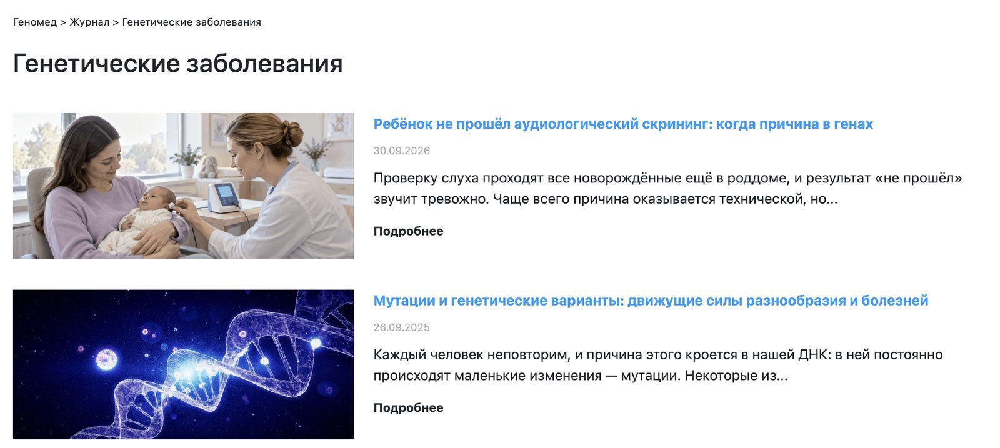
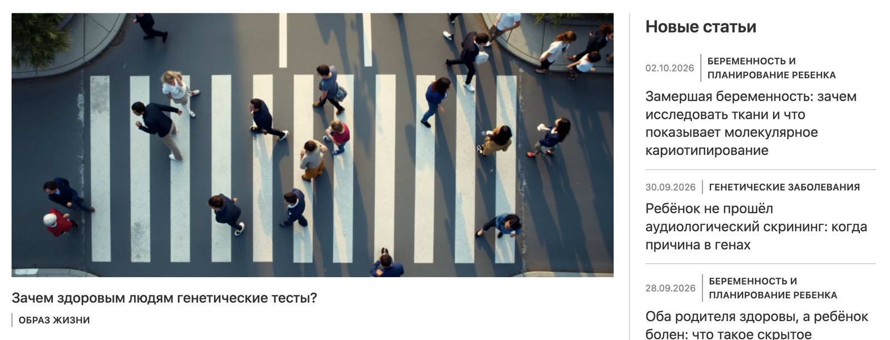

The situation
Nobody had worked on Genomed's site systematically before. There were subdomains, standalone pages and a pile of mid-quality SEO articles, each sitting on its own. Some of those articles already pulled search traffic, but they were not connected to each other or to anything the lab sold.
There was no ad budget, so search was the only channel. The question was whether to build traffic from scratch or put to work the traffic that was already arriving.
The fork
The articles that already had traffic were the most valuable thing on the site, and nobody was using them. Throwing them away meant starting from zero; putting them at the top of a structure meant every new article started next to a page search engines already trusted.
What shipped
- One journal, nested URLs. Articles moved to
/journal/section/articleon the main site, grouped into sections, with redirects from the old addresses and structured data markup. - Articles that feed each other. Pages with traffic link to their neighbours in the same section, so new articles get found through old ones.
- A path to a test from every article. Each article carries a snippet for the relevant test, leading to its landing page and then to checkout.
- Writing to demand. New articles were planned from Yandex Wordstat: what people search for, how often, in what words. Soon after GPT-3.5 came out, I paid for it out of my own pocket: the model wrote the drafts and doctors checked them before publication.

What happened
New visitors to genomed.ru, by month thousands · amber = after the journal launch
| Month | New visitors |
|---|---|
| Jul 2022 | 79,209 |
| Aug 2022 | 85,517 |
| Sep 2022 | 87,059 |
| Oct 2022 | 96,707 |
| Nov 2022 | 105,127 |
| Dec 2022 | 116,744 |
| Jan 2023 | 140,844 |
| Feb 2023 | 146,030 |
| Mar 2023 | 166,989 |
Traffic grew every month after the launch. A year and a half later the journal was still carrying the site: in January to November 2024, five of its articles were among the ten most visited pages on genomed.ru, the top one with 78,000 visitors.
